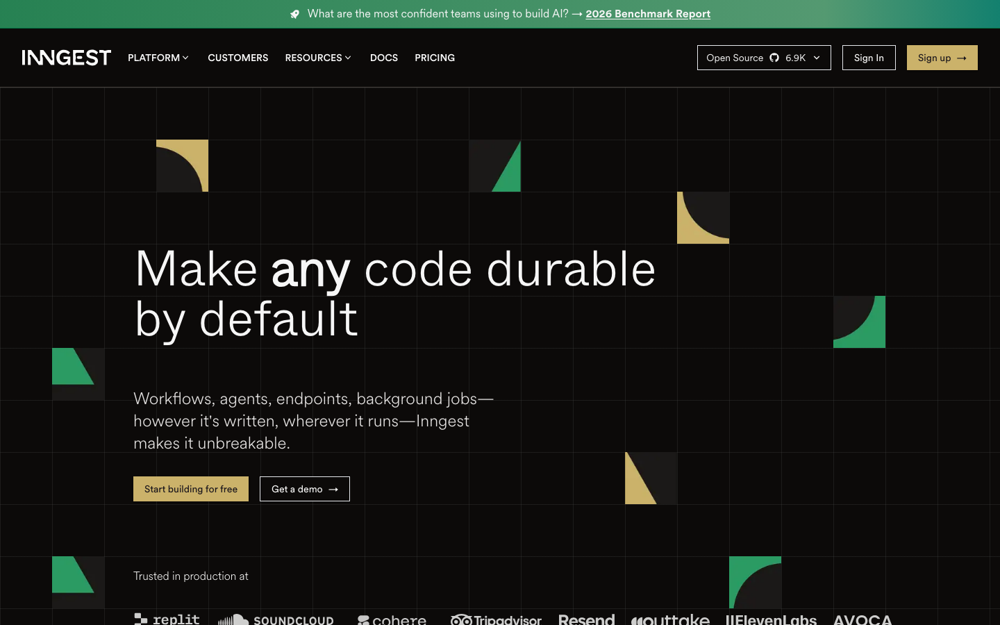

Inngest — Marketing Landing Hero
The hero communicates the idea (“Make any code durable by default”) but shows nothing of the product. The whole left-aligned column sits on an empty dark grid; the only thing a developer can actually evaluate — the code — is buried far below the fold. Pull a real code / trace visual into the hero’s empty right half. Every strong dev-tool hero in this space (Linear, GitHub Copilot, the GitHub Codespaces demo) lets you see the thing working before you scroll. That is the highest-impact, lowest-risk change here.
Current state

Improvement ideas
Five concrete changes, ordered by impact-to-effort. Each is tied to a real reference whose visionDescription was read before it was attached; captions describe what is actually in each screenshot. References are inspiration, not templates — adapt the pattern, don’t clone the layout.
1. Put the product in the hero — fill the empty right half with a code + trace visual ★ highest impactlow–medium effort
Right now the right two-thirds of the fold is decorative grid tiles. For a durability platform, the most persuasive
thing you have is the code — step.run(...) with automatic retries, and the trace that proves it recovered.
You already own this asset; it just lives 4–5 scrolls down. Lift a tightened version of the
step.run / step.ai / step.sleep snippet (or a short trace timeline) into the
hero’s right column so a developer can read what Inngest does before deciding whether to scroll.

step.run block beside it is evidence. Surfacing the code you already feature lower on the page
closes the gap between promise and demonstration without inventing any new asset — and it makes the dead right half of
the fold earn its space.
┌──────────────────────────────────────────────────────────────┐
│ INNGEST Platform Customers Resources Docs [Sign up →] │
├──────────────────────────────────────────────────────────────┤
│ ┌───────────────────────────┐ │
│ Make any code durable │ ● ● ● transcribe.ts │ │
│ by default │ const x = await step.run(│ │
│ │ 'transcribe', async()=> │ │
│ Workflows, agents, endpoints, │ deepgram.transcribe() │ │
│ background jobs — Inngest │ ) ✔ retried · 1 run │ │
│ makes it unbreakable. │ await step.sleep('1d') │ │
│ ├───────────────────────────┤ │
│ [ Start building for free ] │ trace ▸ transcribe ✔ 0.4s │ │
│ [ Get a demo → ] │ ▸ summarize ↻✔ 1.2s│ │
│ └───────────────────────────┘ │
│ Trusted in production at · replit · soundcloud · cohere … │
└──────────────────────────────────────────────────────────────┘
2. Show a real product screenshot, not decorative tiles high impactlow effort
If a full code demo is too much for v1, the lighter version of Idea 1 is to drop a single high-fidelity screenshot of the Inngest Cloud run view / trace timeline into the hero. The decorative quarter-circle tiles are on-brand but say nothing; one real UI image does the work of the entire empty grid.

┌──────────────────────────────────────────────────────────────┐ │ Make any code durable by default │ │ Workflows, agents, endpoints, background jobs… │ │ [ Start building for free ] [ Get a demo → ] │ │ ┌──────────────────────────────────────────────────────────┐ │ │ │ Inngest Cloud · Runs │ │ │ │ ▸ process-video ✔ completed 3 steps 1.8s │ │ │ │ ├ transcribe ✔ ├ summarize ↻✔ │ │ │ │ └ notify ✔ [ Replay ] [ Cancel ] │ │ │ └──────────────────────────────────────────────────────────┘ │ └──────────────────────────────────────────────────────────────┘
3. Make one CTA clearly primary and add a micro-trust line medium impactvery low effort
The two CTAs (“Start building for free”, “Get a demo →”) are similar in weight and sit side by side with no supporting context. Commit to one primary action: keep Start building for free as the solid button and demote Get a demo to a quieter secondary (ghost/text). Add a one-line reassurance under the buttons — e.g. “No credit card · Free tier · Self-host or cloud” — to remove the friction a niche developer audience weighs before clicking.

before → [ Start building for free ] [ Get a demo → ]
(both look equally clickable, no context)
after → ┌───────────────────────────┐
│ Start building for free │ Get a demo → (ghost)
└───────────────────────────┘
No credit card · Free tier · Self-host or cloud
4. Promote the trusted-by logos and the “6.9K stars” into the fold medium impactvery low effort
Inngest already has two strong, niche-credible trust signals — a serious logo wall (Replit, SoundCloud, Cohere, Tripadvisor, Resend, ElevenLabs…) and a 6.9K-star open-source badge in the nav. But the logo bar only peeks in at the bottom edge of the fold, and the GitHub stars are visually buried in the header. Lift the logo strip a few hundred pixels so a full row is visible without scrolling, and give the star count more prominence near the CTAs.
┌──────────────────────────────────────────────────────────────┐ │ … CTAs … │ │ │ │ ★ 6.9K on GitHub Trusted in production at │ │ replit soundcloud cohere tripadvisor resend elevenlabs │ │ └────────────── full row visible above the fold ───────────┘ │ └──────────────────────────────────────────────────────────────┘
5. Sharpen the headline’s payoff for a skim-reading developer lower impactvery low effort · copy
“Make any code durable by default” is strong and ownable — keep its spirit. The gap is that the concrete payoff (retries, recovery, no infra) lives only in the subhead. Consider a benefit-led support line directly under the headline so a 3-second skim lands the value, e.g. “Automatic retries, recovery, and flow control — no queues, no workers, no new infra.” This complements (doesn’t replace) the existing copy.

Make any code durable by default Automatic retries, recovery & flow control — no queues, no workers. ← new skim line Workflows, agents, endpoints, background jobs … makes it unbreakable. ← existing subhead
What’s working — don’t change these
- The headline is genuinely strong. “Make any code durable by default” is short, ownable, and the bolded any does real work. Don’t water it down — only add a supporting skim line beneath it (Idea 5).
- The dark, restrained, grid aesthetic fits the audience. It reads as a serious infra tool and matches peers like Linear and Harness. The problem isn’t the style — it’s that the fold is empty, not that it’s dark.
- The trust assets are real and on-brand. A credible production logo wall (Replit, SoundCloud, Cohere, ElevenLabs…) plus a 6.9K-star OSS badge. They just need to move up (Idea 4), not change.
- Dual “build vs. demo” intent is the right instinct for a tool serving both self-serve devs and enterprise buyers. Keep both CTAs — just give them a clear primary/secondary hierarchy (Idea 3).
A/B-test evidence (honest note)
All references
| Company (image source) | Source | What it shows (from visionDescription) | Used for |
|---|---|---|---|
| GitHub Codespaces github.com/features/codespaces |
Lazyweb | Headline “Secure development made simple” + dual CTA, with a live editor demo (file explorer, code, preview pane) in the fold. | Idea 1 — code/product demo in hero |
| Linear linear.app |
Lazyweb | Dark-themed marketing landing; hero pairs headline + nav with a product UI screenshot in the fold. | Idea 2 — product screenshot on dark hero |
| GitHub Copilot github.com/features/copilot |
Lazyweb | Hero with headline, product video, primary CTAs (free trial vs. docs), and trusted-by logos directly below. | Ideas 3 & 4 — CTA hierarchy + social proof in fold |
| Temporal temporal.io/how-it-works |
Lazyweb | Durable-execution explainer with a prominent CTA and a three-step Develop → Deploy → Learn-more flow. (How-it-works page, not the homepage hero.) | Idea 5 — positioning / headline payoff |
Reference thumbnails (embedded via Lazyweb storage URLs):
Considered but not attached (honesty notes): Trigger.dev (Background Jobs — the closest category competitor) and Supermaven surfaced in search but had empty visionDescriptions, so they are mentioned in text only — no image. Appwrite and CockroachLabs results were a docs page and a mis-tagged jobs-listing screenshot respectively, so they were dropped to avoid a mismatched reference. A Brightcove developer / Zencoder result showed a strong dark hero with code-editor background visuals and reinforced Idea 1, but the two GitHub examples illustrate the “code in the fold” idea more cleanly, so it was held back rather than padding the gallery.
design-improve skill. References embedded directly from the Lazyweb screenshot
library (storage-backed URLs); current-state screenshot saved locally at references/current.png.
Captions are written from each result’s visionDescription — not invented. References are inspiration, not
templates: adapt the pattern to Inngest’s context and validate conversion changes against your own analytics.